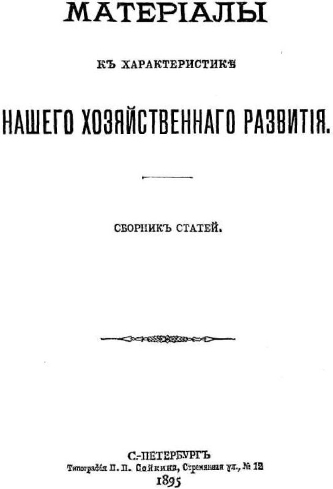

Написано в конце 1894 – начале 1895 ί
Напечатано в 1895 г. в сборнике «Материалы к характеристике нашего хозяйственного развития».
СПБ. Подпись: К. Тулин
Печатается по тексту сборника «Материалы к характеристике нашего хозяйственного развития», сверенному с текстом сборника:
Вл. Ильин. «За 12 лет», 1907
Титульный лист сборника, в котором была напечатана работа В. И. Ленина «Экономическое содержание народничества и критика его в книге г. Струве». – 1895 г.
Названная книга г. Струве представляет из себя систематическую критику народничества, понимая это слово в широком смысле – как теоретическую доктрину, определенно решающую важнейшие социологические и экономические вопросы, и как «систему догматов экономической политики» (VII с). Одна уже постановка подобной задачи могла бы сообщить книге выдающийся интерес; но еще важнее в этом отношении та точка зрения, с которой ведется критика. Об ней автор говорит в предисловии следующее:
«Примыкая по некоторым основным вопросам к совершенно определившимся в литературе взглядам, он (автор) нисколько не считал себя связанным буквой и кодексом какой-нибудь доктрины. Ортодоксией он не заражен» (IX).
Из всего содержания книги явствует, что под этими «совершенно определившимися в литературе взглядами» разумеются взгляды марксистские. Спрашивается, какие же именно «некоторые основные» положения марксизма автор принимает и какие отвергает? – почему и насколько? Автор не дает прямого ответа на этот вопрос. Поэтому, для выяснения того, что именно в этой книге может быть отнесено на счет марксизма, – какие положения доктрины автор принимает и насколько последовательно их выдерживает, – какие отвергает и что в этих случаях получается, – для выяснения всего этого необходим подробный разбор книги.
Содержание ее чрезвычайно разнообразно: автор дает, во-первых, изложение «субъективного метода в социологии», принимаемого нашими народниками, критикует его и противопоставляет ему метод «историко-экономического материализма». Затем он дает экономическую критику народничества, во-первых, на основании «общечеловеческого опыта» (с. IX) и, во-вторых, на основании данных русской экономической истории и действительности. Попутно дается и критика догматов народнической экономической политики. Это разнообразие содержания (совершенно неизбежное при критике крупнейшего течения нашей общественной мысли) определяет и форму разбора: приходится следить шаг за шагом за изложением автора, останавливаясь на каждом ряде его аргументов.
Но прежде чем приступать к разбору книги, мне кажется необходимым остановиться поподробнее на некотором предварительном объяснении. Задача настоящей статьи – критика книги г. Струве с точки зрения человека, «примыкающего» по всем (а не по «некоторым» только) «основным вопросам к совершенно определившимся в литературе взглядам».
Взгляды эти не раз уже излагались с целью критики на страницах либерально-народнической печати, и это изложение до безобразия затемнило их, – даже более того: исказило, припутав не имеющие никакого отношения к ним гегельянство, «веру в обязательность для каждой страны пройти через фазу капитализма» и много другого чисто уже нововременского вздора.
Особенно практическая сторона доктрины, применение ее к русским делам, подвергалась искажениям. Не желая понять, что исходным пунктом доктрины русского марксизма является совершенно иное представление о русской действительности, наши либералы и народники сличали доктрину со своим старым взглядом на эту действительность и получали выводы не только ни с чем несообразные, но еще вдобавок возводящие на марксистов самые дикие обвинения.
Не определив с точностью своего отношения к народничеству, – мне представляется, поэтому, невозможным приступать к разбору книги г. Струве. Кроме того, предварительное сличение народнической и марксистской точек зрения необходимо для разъяснения многих мест разбираемой книги, которая ограничивается объективной стороной доктрины и оставляет почти вовсе в стороне практические выводы.
Сличение это покажет нам, какие есть общие исходные пункты у народничества и марксизма и в чем их коренное отличие. При этом удобнее взять старое русское народничество, так как оно, во-первых, неизмеримо выше современного (представляемого органами вроде «Русского Богатства») в отношении последовательности и договоренности, а, во-вторых, цельнее показывает лучшие стороны народничества, к которым в некоторых отношениях примыкает и марксизм.
Возьмем одну из таких professions de foi[138] старого русского народничества и будем следить шаг за шагом за автором.